Diary Entry 25: The Tower To Fulfill Ones Destiny In Ones Own Way As I entered the Tower with Azel in my arms, Craymen's voice echoed throughout the room, saying, "Place Azel in that compartment." I wondered where his voice was coming from. A compartment lay before me, I placed Azel in it. It soon ascended upward. Craymen then said, "Step onto the light." A ball of light soon appeared, making a platform for me to step onto. When I stepped onto the flat disc of energy, it began to move forward. I passed through a corridor full of dormant Ancient Age monsters. I soon arrived at Craymen's location. Craymen and I had a long conversation. As we rode on energy discs throughout a long corridor, I noticed we were underwater, near Uru. A strange white eel swam by. Craymen told me that the Towers main function was to create a habitable environment for an already dead planet. He also said that the monsters are caretakers of the ecosystem and protect mankind from extinction. As we continued on throughout the long corridor, he explained the Empires endless cycle of war and death. " Even if the Tower restores the world, the humans will just consume and destroy it again. Someone, or something, must take control of everything, or we shall continue to destroy ourselves forever," he said. We arrived in a room where Azel was being kept safe, inside her compartment. Craymen continued to tell me that Azel was created as a weapon, made to infiltrate a Tower and destroy it from within. Before he could say anything more, the room soon shook violently. It was the Empire! They were now inside the Tower, trying to gain access to its secrets. There was no one left to stop them. "You...are our only hope," Craymen said. I asked him what he wanted me to do. "Nothing...I merely set the stage. You must fulfill your own destiny, in your own way," he said. I intended to stop them, but I made sure Craymen knew that I still hadn't forgiven him yet. I departed with my dragon and rode an elevator deep inside the Tower, in pursuit of the Empire. The elevator brought the dragon and I to Tower 1F North. Craymen's voice echoed once more, saying, "The Imperials are already invading the top of the Tower, and They're heading for the control area.." I told him that we would finish things, when I return. He looked forward to seeing me return safely. I soon arrived at the bottom floors of the Tower. Craymen proceeded to tell me that the Tower consists of vast areas connected by gates. He then told me to fly to the top. The gate to the shortest route was already open. The dragon and I flew upward and found the Gate Craymen was talking about. We entered the Gate and entered Tower 4F. Moving directly forward, brought us into a chamber full of item containers. There was also a switch in the center of the room. I made sure not to touch it, as I didn't want to wake up the Tower. Moving further along the corridor, we ran into the Imperial Forces. It was the first battle out of five, we would have with them. The first sequence of Imperial battles was over fairly quickly, thanks to the dragon's firepower. As I continued down the corridor of Tower 4F, we found the Tower Field Map, a map of the Tower. It was quite handy. It helped me navigate through the many corridors of the Tower. I soon rode an elevator to Tower 5F. Moving through another corridor, we had to fight the Imperial Forces once more. After the battle, we found an eastern most chamber with another set of item containers. After acquiring the items, we made our way out of the corridor and into Tower- Hangar # 1. The Imperial Forces were much faster than I had expected. There was just too many of them. Craymen's voice echoed yet again, telling me that the Imperial Troops had already invaded the upper floors of the Tower. My main objective was to destroy their Transport Ship. I had to do all of the work, while Craymen just sat back and watched!"I want to fight...But it would be in vain, you're my only hope now," he said. I paid no attention to his pointless ranting. After the conversation with Craymen, I made my way to the upper most gate, to Tower 6F, and rode an elevator to Tower 8F North Passage. I then proceeded past an inner passage to Tower 8F West Passage, and rode another elevator to Tower 9F West Passage. After moving through another inner passage, I arrived at Tower 9F East Passage. It was here that the dragon and I were engaged by the Imperial Forces, for the third time. After making quick work of them, we arrived at Tower 11F, and had to face the the last two waves of the Imperial bastards. They just kept coming! After the tiring battles, we found ourselves in Tower - Hangar # 2. We continued upward and entered another gate. We were now at Tower 12F. Another elevator at the end of the corridor, took us to Tower 13F. We proceeded down another long corridor, and exited to the upper floors of the Tower. Craymen's voice echoed, " That's the top of the Tower. The presence of the Transport Ship was verified. This is it." This was now my chance to rid the world of the Empire! I was almost there, just a little higher. The dragon flew upward until we could see the exit. We were stopped in our tracks by the Empires Transport Ship. The dragon fought a fierce battle against the massive machine, and came out victorious. After having destroyed the Transport Ship, I made my way on foot, to the control area of the Tower. Therein, I found Azel. "It's a trap," she yelled. It was too late. I was in the Emperor's hands. Craymen lay bound on the cold ground, and nothing but Imperial soldiers surrounded us. Then, out of nowhere, Craymen made an attempt to kill the Emperor! Sadly, he failed and was gunned down by none other than the Emperor himself. He demanded Azel open the gate. Azel screamed as Craymen lay unconscious, and the Tower began to activate itself. Things turned out for the worse, for the Empire, as a giant monster fell from above! The Emperor got what he deserved, a giant blade through his body! Surrounding soldiers also had their lives taken from them in an instant. I had to fight for my life, as I tried to protect Craymen and Azel from harm. I fired my gun constantly. The laser fire was just deflected. Then the unthinkable happened, I failed in my attempt to protect Craymen. He was killed by the monster, a blade through his body, just like the Emperor. Not a fitting way to go. Azel soon fainted and I caught her in my arms, continuing my assault on the monster. I finally managed to subdue the horrible creature and with Azel, I quickly made my escape, thanks to my dragon. As we flew off into the distance, I could see a massive swarm of monsters emerge from the depths of the Tower. Hordes of monsters destroyed the Imperial fleet stationed nearby, and infested the Flagship Grig Orig. There was nothing more I could do. We flew to safety. 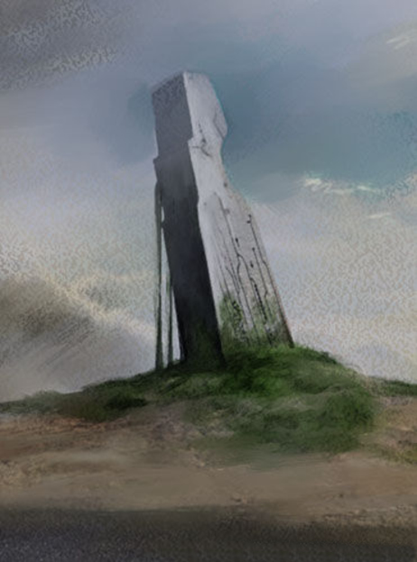 |
|
| Divine
Overview |
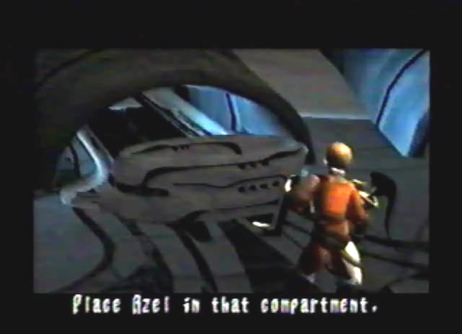 1. Edge enters the Tower on foot, with Azel. Craymen then tells Edge to place Azel in a compartment directly in front of him. Once Azel is in place, the compartment ascends upward. |
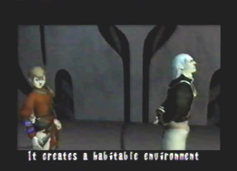 2. Edge then steps onto a beam of light that brings him to Craymen's location. Craymen then explains to Edge, the purpose of the Tower and the monsters it produces. |
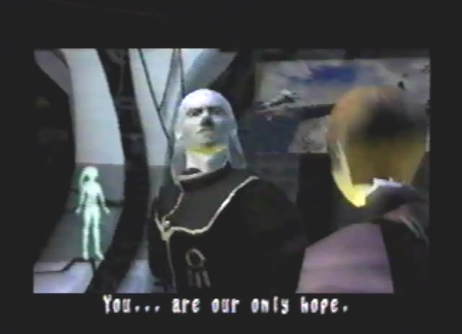 3. The Empire will stop at nothing to gain the powers of the Tower. They have already broken inside. Craymen tells Edge that he is the only person who can stop them. It's his destiny. Edge departs and proceeds to ride his dragon deep inside the Tower. |
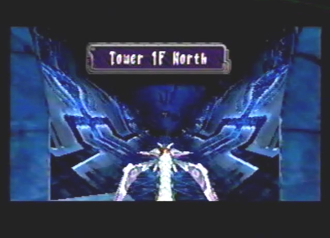 4. The first elevator will bring you to Tower 1F North. Craymen's voice will soon echo inside the corridor. He will tell you that the Imperials are invading the top of the Tower, and are heading for the control area. |
| 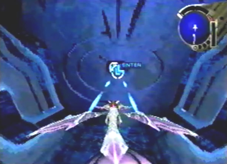 5. You will come to a door that requires you to lock-on to its center and shoot a laser, in order to open it. The many corridors of the Tower are filled with these doors. |
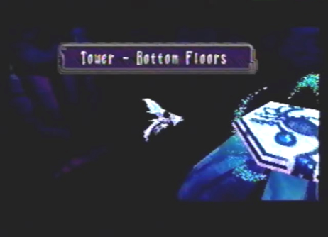 6. You will soon arrive at Tower-Bottom Floors. |
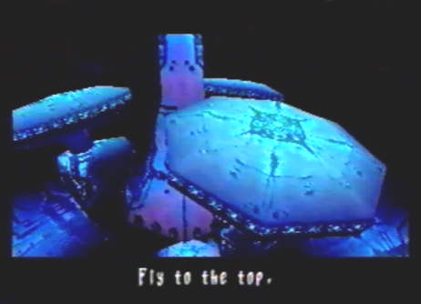 7. Craymen will tell you that the Tower consists of vast areas connected by Gates. You will have to fly to the top. The gate to the shortest route is already open. |
|
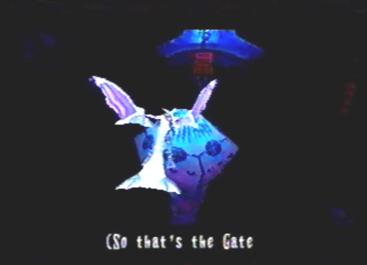 8. Fly upwards and you will eventually stumble upon the Gate that Craymen was talking about. Enter the Gate. |
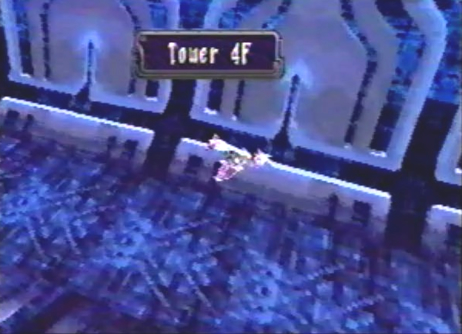 9. You will now be at Tower 4F. |
|
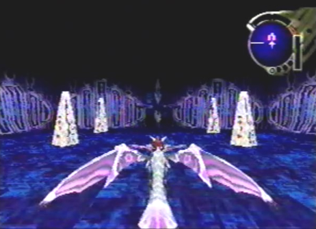 10. Moving directly ahead will bring you to a large chamber, containing an assortment of items. The switch in the middle can't be activated. |
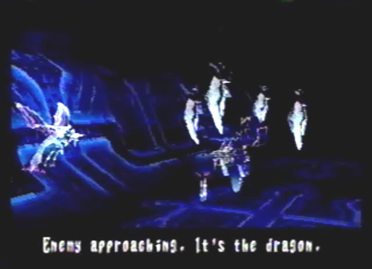 11. As you fly further inside the corridor, you will have to fight the first Imperial battle sequence out of five. The first battle in the first sequence is against a Skiff Patrol Group. |
|
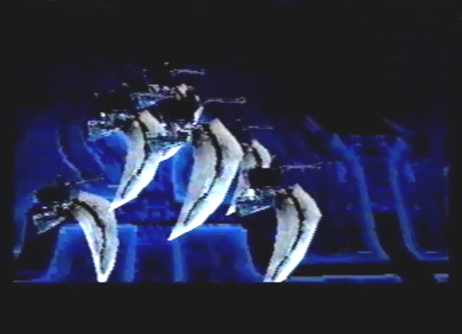 12. The last battle in the first sequence, will be against a group of Pyros. |
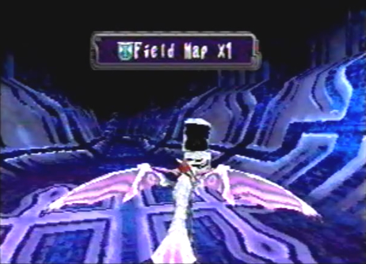 13. As you reach the end of the corridor you will find the Field Map. Proceed past the Field Map, and ride the elevator upwards. |
|
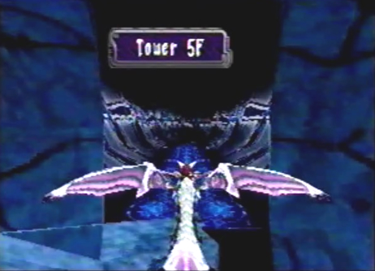 14. You will arrive at Tower 5F. |
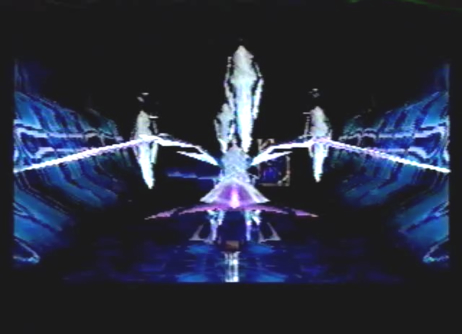 15. The second Imperial battle sequence will greet you, as you move deeper inside the corridor. Your first battle in the second sequence, will be against another Skiff Patrol Group. |
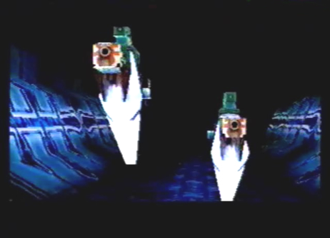 16. The second battle in the second sequence, will be against a group of Marauders. |
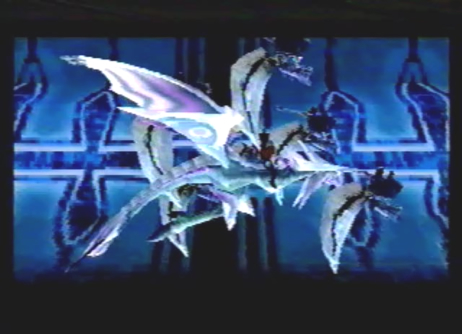 17. The third battle in the second sequence, will be against a group of Pyros. |
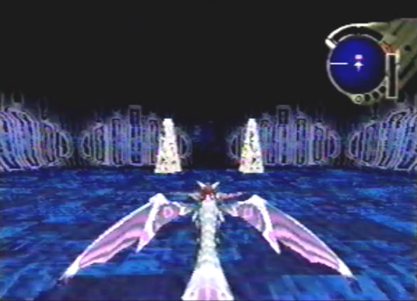 18. After the battle, be sure not to miss the items found in the eastern most chamber. |
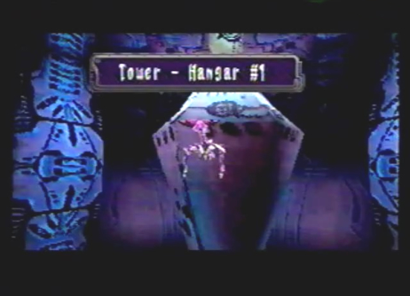 19. Upon exiting Tower 5F, you will arrive at Tower - Hangar # 1. |
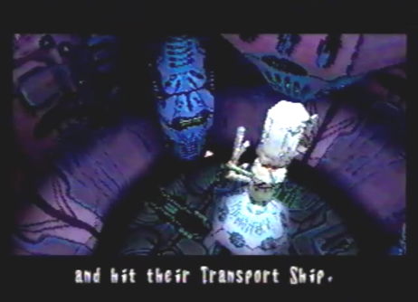 20. Craymen's voice will echo again, this time telling you to proceed to the upper floors. Once there, the Empire's Transport Ship awaits. You need to destroy it. Now, proceed to the upper most gate to reach Tower 6F, and ride the elevator at the end of the corridor. |
|
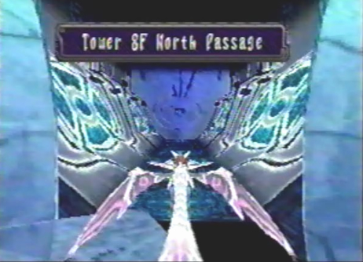 21. The elevator will bring you to Tower 8F North Passage. Proceed past the Inner Passage. |
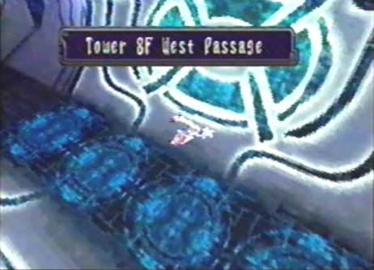 22. You will soon arrive at Tower 8F West Passage. Ride the elevator found at the end of the corridor. |
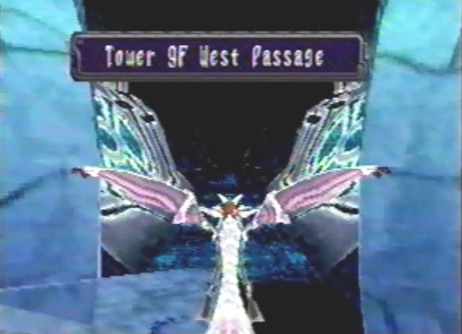 23. You are now at Tower 9F West Passage. Again, proceed past the Inner Passage. |
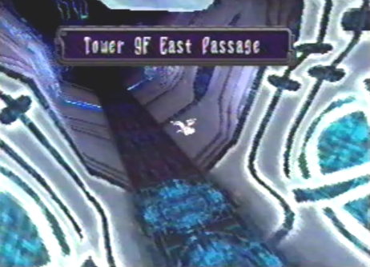 24. You will come to Tower 9F East Passage. Moving throughout this corridor will cause you to face the Third Imperial battle sequence. This time, you will fight against another Skiff Patrol Group and more Pyros. After the sequence of battles, take the elevator at the end of the long corridor. |
|
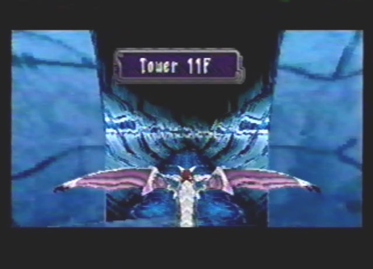 25. You will be brought to Tower 11F. Continue down the corridor and you'll face the fourth Imperial battle sequence against: Skiff Patrol Group, Marauders, and Pyros. |
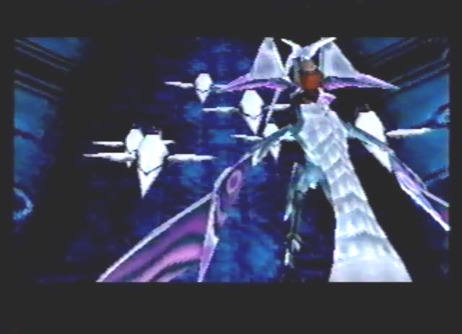 26. Immediately after the last sequence of battles, you will face the fifth and final Imperial battle sequence against: Pyros and four waves of Stingers. |
|
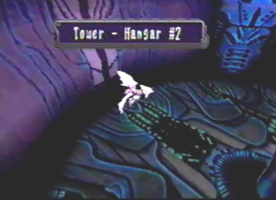 27. After the battle, continue to Tower - Hangar # 2. Proceed to the upper most gate. |
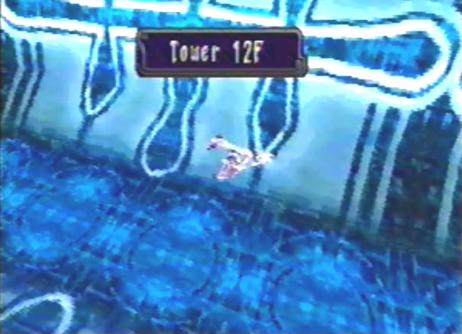 28. You are now at Tower 12F. Ride the elevator at the end of this corridor. |
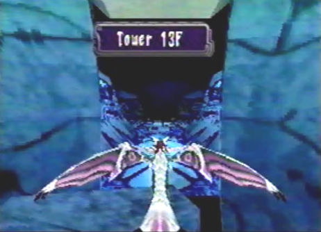 29. The elevator will bring you to Tower 13F. Proceed down the corridor to the exit. |
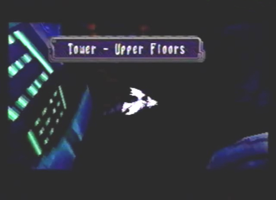 30. Upon exiting, you will enter Tower - Upper Floors. |
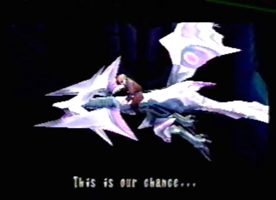 31. The Transport Ship draws near. |
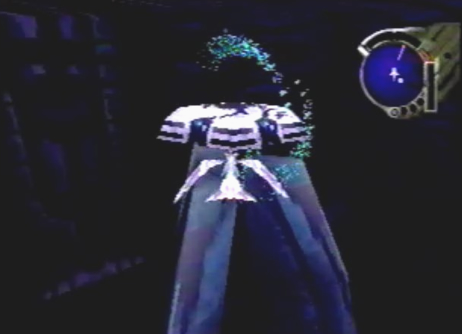 32. Make sure to save your game. |
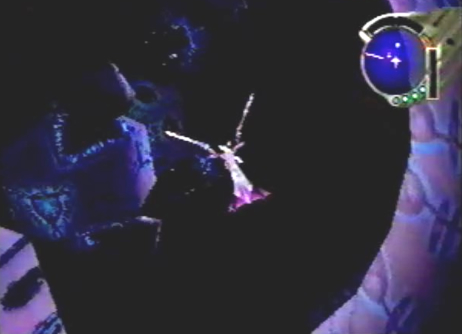 33. You're almost there! Fly all the way up, until you can see the exit of the Tower. |
|
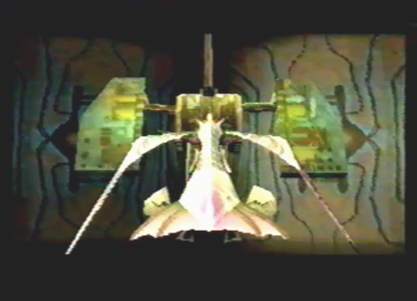 34. The Transport Ship, or boss: Exterminator will stop you in your tracks. Destroy it! |
|
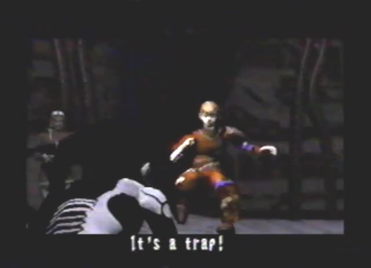 35. After the battle, Edge makes his way to the control area. He runs head on into a trap, laid out by the Empire. |
|
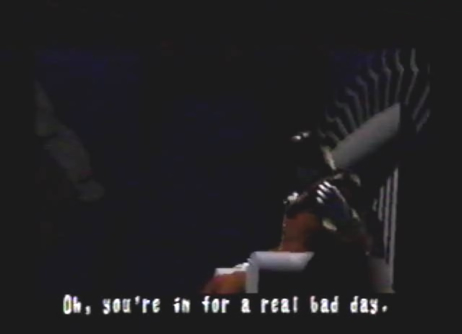 36. Meet the Emperor, a vile man. |
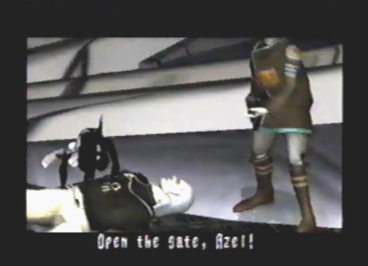 37. Craymen attempts to kill the Emperor, fails, and is gunned down. The Emperor then demands that Azel open the gate. |
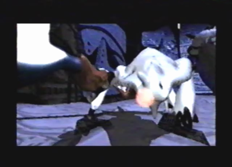 38. Once the gate is activated, a monster suddenly drops down from above, on an unsuspecting Imperial Soldier! The monster then thrusts its blade-like arm into the Emperor's body. |
|
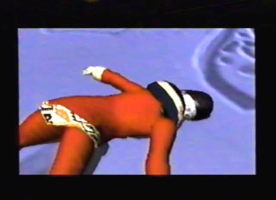 39. The Emperor got what he deserved. |
|
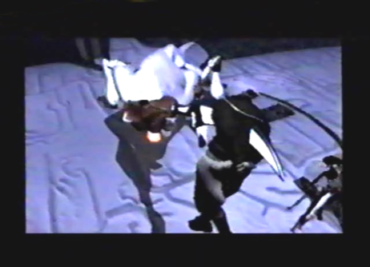 40. Unfortunately, the monster also finishes off Craymen as well. |
|
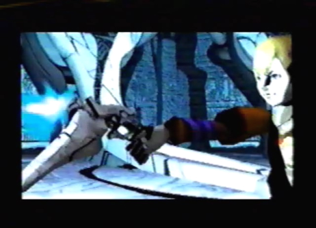 41. Edge fires his gun at the monster, with all of his might! |
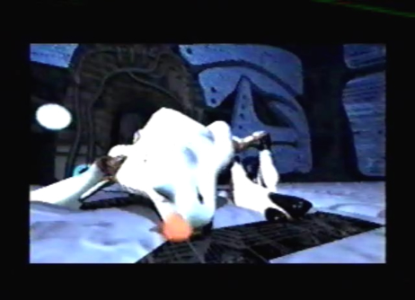 42. He actually manages to subdue the horrible monster. |
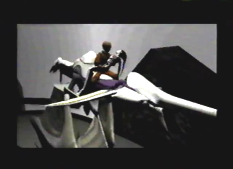 43. Edge and a yet again unconscious Azel, make their escape out of the Tower, with the help of the dragon. |
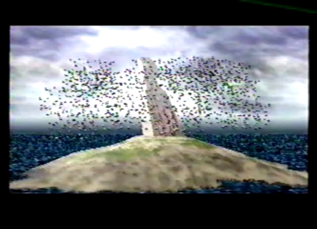 44. Once outside, the Tower becomes fully activated, releasing swarms of monsters. |
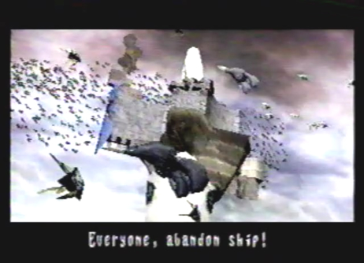 45. The Imperial Fleet stationed near the Tower gets completely destroyed, and Grig Orig becomes infested by the monsters. |
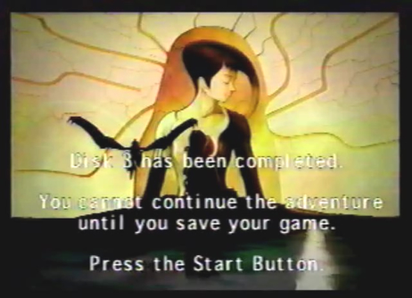 46. Well, you're done with disc 3. It's time to save your game, and insert disc 4. |